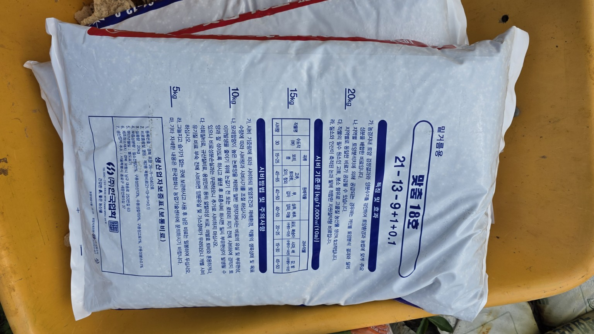
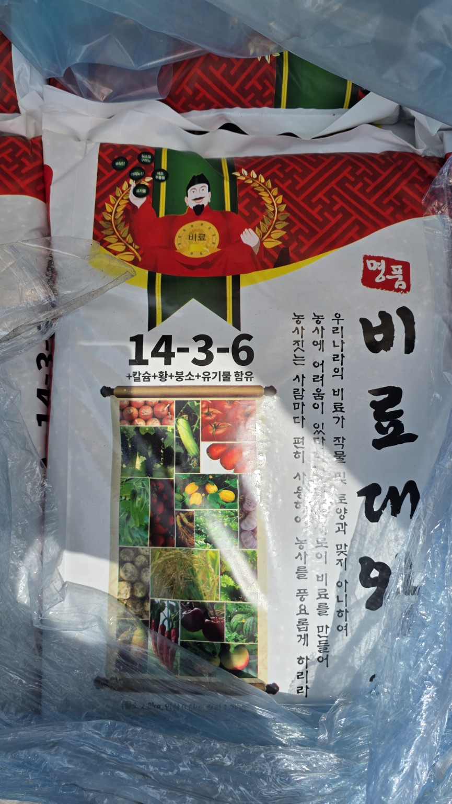
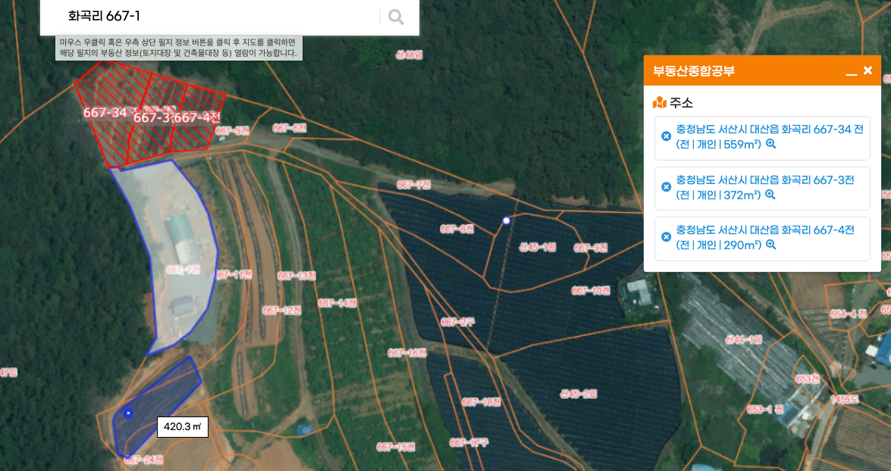
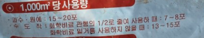

화곡농장 들깨·열무 밑거름 시비 계획
기록일: 2026년 7월 5일
충남 서산시 대산읍 화곡리 · 총 1,641.3㎡(약 496.5평)
대상 필지 및 작물
| 필지 | 면적 | 평수 | 작물 |
|---|---|---|---|
| 667-34 | 559㎡ | 169.1평 | 들깨 |
| 667-3 | 372㎡ | 112.5평 | 들깨 |
| 아래 밭 | 420.3㎡ | 127.1평 | 들깨 |
| 667-4 | 290㎡ | 87.7평 | 열무 |
| 합계 | 1,641.3㎡ | 496.5평 |

맞춤18호
21-13-9 + 붕소 계열의 복합비료로, 현재 계획에서는 밑거름용으로 사용합니다.

| 필지 | 작물 | 면적 | 맞춤18호 | 포대 환산 |
|---|---|---|---|---|
| 667-34 | 들깨 | 559㎡ | 30kg | 1.5포 |
| 667-3 | 들깨 | 372㎡ | 20kg | 1포 |
| 아래 밭 | 들깨 | 420.3㎡ | 25kg | 1.25포 |
| 667-4 | 열무 | 290㎡ | 25kg | 1.25포 |
| 합계 | 100kg | 5포 | ||
들깨는 질소가 과하면 웃자람과 도복 위험이 있으므로 추가 질소비료는 생육을 보고 결정합니다.
비황골드
20kg 포대이며, 포대 표기상 과수·원예 1,000㎡당 15~20포 사용량이 적혀 있습니다.

명품비료
14-3-6 계열이며 칼슘·황·붕소·유기물 함유 표시가 있습니다.

트랙터 로터리 전 살포 방법
- 필지별 사용할 양을 먼저 나눕니다.
- 비황골드와 맞춤18호를 밭 전체에 최대한 균일하게 뿌립니다.
- 절반은 한 방향, 나머지 절반은 직각 방향으로 뿌립니다.
- 한곳에 몰아서 쏟지 않습니다.
- 살포 후 트랙터 로터리로 흙과 충분히 섞습니다.
- 이후 두둑을 만들고 작물별 파종·정식을 진행합니다.
대산농협 구매 메모
- 맞춤18호 조합원 가격
- 비황골드 조합원 가격
- 명품비료 조합원 가격
- 일반 판매가와 조합원가 차이
- 지원·계통비료 여부